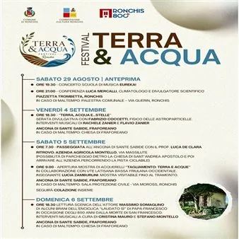

da sab 29 ago a dom 6 set
Terra & Acqua 2026
Un’unica manifestazione con 2 appuntamenti raccolti e ordinati nel programma completo.
 Indicazioni
Indicazioni
- Costi e prenotazioni
- Costo non indicato · Prenotazione non indicata
- Programma
- Programma raccolto. Gli appuntamenti delle diverse schede sono riuniti in questa pagina.
- In caso di maltempo
- Nessuna indicazione specifica pubblicata.
- Note
- Le schede dei singoli appuntamenti sono state unite nella manifestazione principale.
L’EVENTO
Descrizione completa
un festival per osservare, ascoltare e vivere il paesaggio con uno sguardo nuovo, attraverso incontri, musica, letture sceniche, esperienze e la presenza di autorevoli ospiti.
Nasce a Ronchis Terra & Acqua, un festival per osservare, ascoltare e vivere il paesaggio con uno sguardo nuovo, attraverso incontri, musica, letture sceniche, esperienze e la presenza di autorevoli ospiti. Programma del festival Tutti gli appuntamenti sono a partecipazione libera
Organized by: Comune di Ronchis Tel. 0431 56014 Email: areaamministrativa@comune.ronchis.ud.it
Ore 7.30 – Ritrovo presso l'Azienda Agricola Montello (Via Massilute) per una passeggiata fino all'Ancona di Sante Sabide insieme al professor Luca De Clara.
", realizzata in collaborazione con UTE Latisana Bassa Friulana Occidentale e con l'insegnante Lucia Zamburlini.
La mostra sarà visitabile dalle ore 9.00 fino al tramonto.
In caso di maltempo, l' evento si terrà presso la Sala della Protezione Civile (Via Moross)
In occasione degli 800 anni dalla morte di San Francesco, l'attore Massimo Somaglino proporrà una lettura scenica di alcuni brani dell'enciclica Laudato si' di Papa Francesco, con accompagnamento musicale di Cristina Mauro e Stefano Montello
In caso di maltempo, l' evento si terrà nella Chiesa di Fraforeano
Nasce a Ronchis Terra & Acqua, un festival per osservare, ascoltare e vivere il paesaggio con uno sguardo nuovo, attraverso incontri, musica, letture sceniche, esperienze e la presenza di autorevoli ospiti. In occasione degli 800 anni dalla morte di San Francesco, l'attore Massimo Somaglino proporrà una lettura scenica di alcuni brani dell'enciclica Laudato si' di Papa Francesco, con accompagnamento musicale di Cristina Mauro e Stefano Montello Ingresso libero In caso di maltempo, l' evento si terrà nella Chiesa di Fraforeano Programma del festival
IL PROGRAMMA
Programma e orari
Le singole date appartengono alla stessa manifestazione. Ogni sede verificata dispone delle proprie indicazioni.
Sabato 5 settembre · Terra & Acqua - Tagliamento: terra e acque
Ronchis · Azienda Agricola Montello Via Massilute
- Ore 7.30 – Ritrovo presso l'Azienda Agricola Montello (Via Massilute) per una passeggiata fino all'Ancona di Sante Sabide insieme al professor Luca De Clara.
- Ore 9.00 - Inaugurazione della mostra di acquerelli "
Domenica 6 settembre · Terra & Acqua - Lettura scenica
Ronchis · Ancona di Sante Sabide Fraz. Fraforeano
- Nasce a Ronchis Terra & Acqua, un festival per osservare, ascoltare e vivere il paesaggio con uno sguardo nuovo, attraverso incontri, musica, letture sceniche, esperienze e la presenza di autorevoli ospiti. In occasione degli 800 anni dalla morte di San Francesco, l'attore…
INFORMAZIONI UTILI
Prima di partire
- Controllare la fonte prima di partire.
ORGANIZZAZIONE